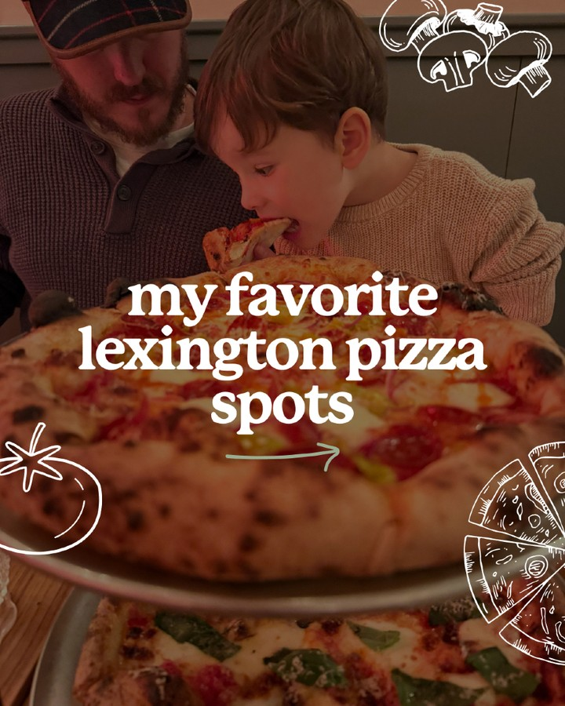
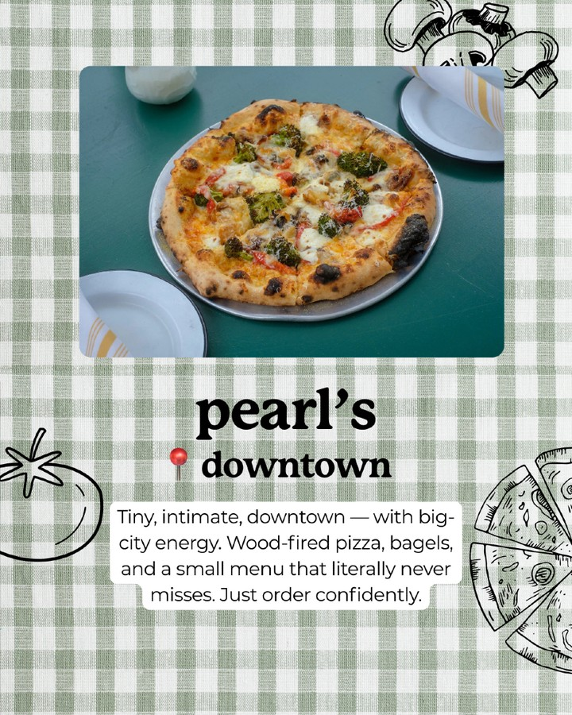
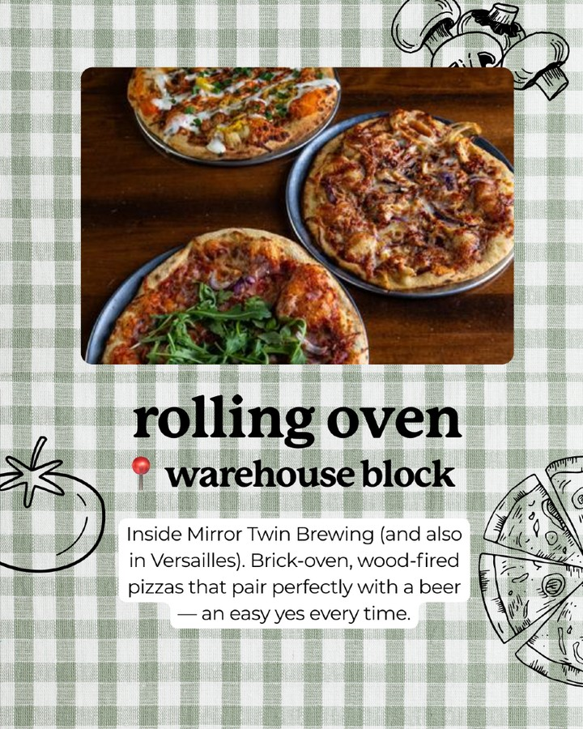
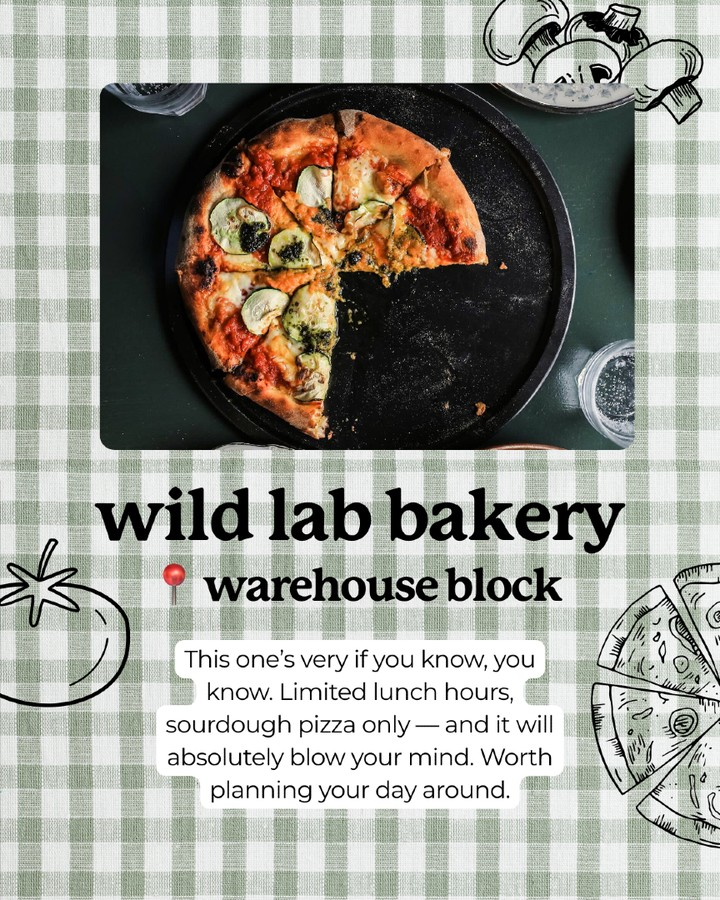
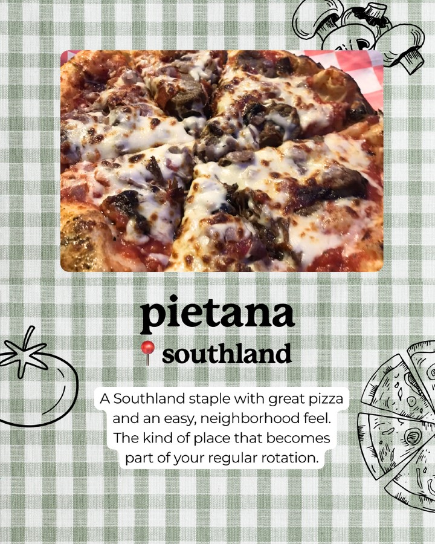
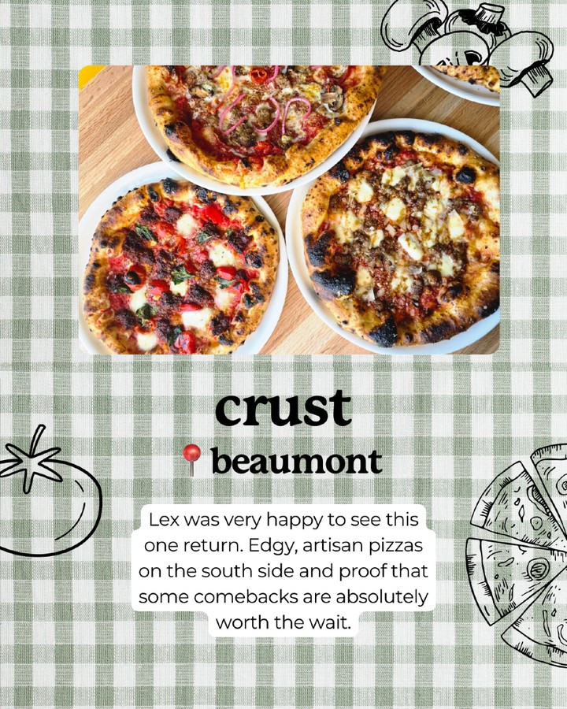
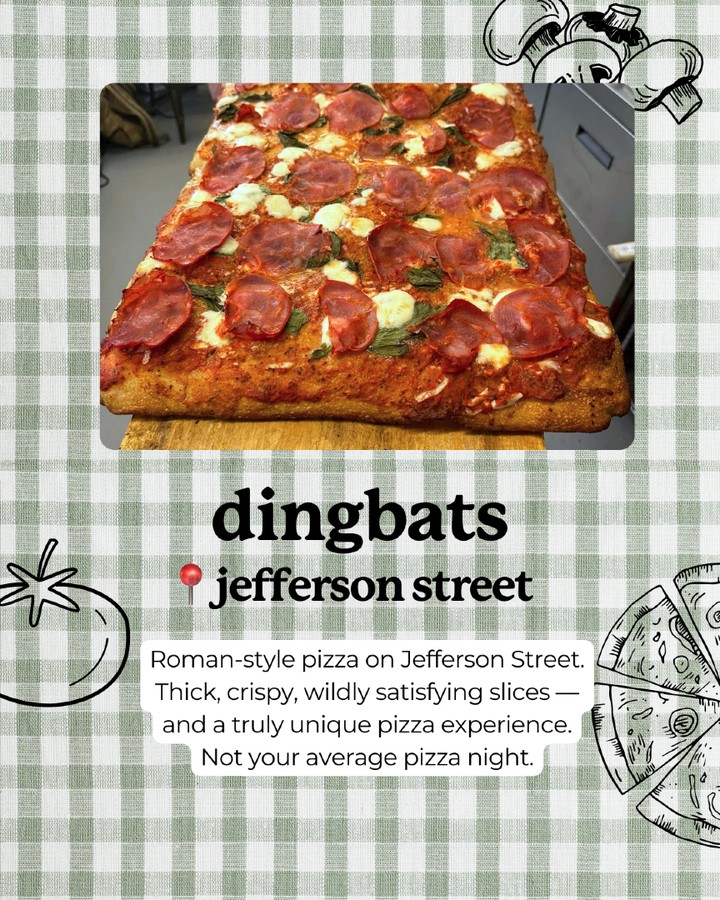
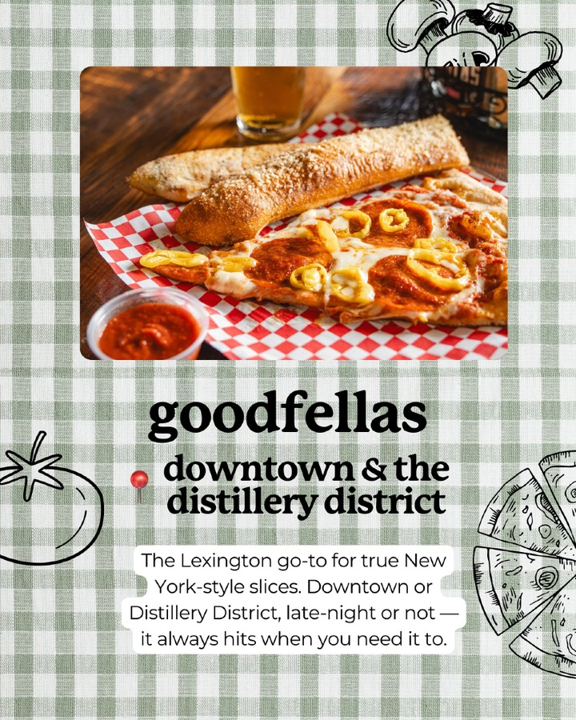
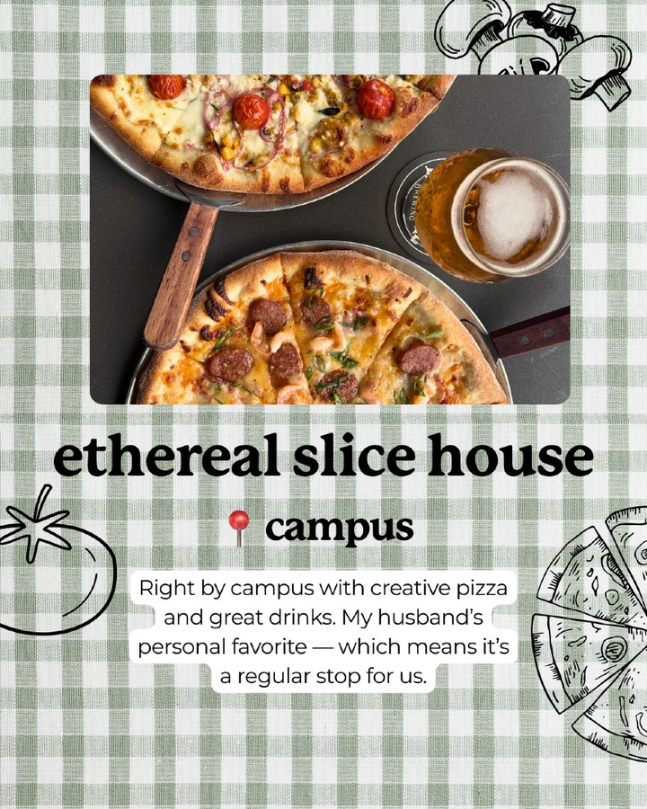

Instagram Post

my favorite lexington pizza spots
carousel (10 slides) (enriched by ClaudeClaw)
Summary
my favorite lexington pizza spots | my favorite lexington pizza spots | pearl's downtown Tiny, intimate, downtown — with big-city... | rolling oven warehouse block Inside Mirror Twin Brewing (... | wild lab bakery warehouse block This one's very if you kn... | pietana southland A Southland staple with great pizza and... | crust beaumont Lex was very happy to see this one return | dingbats jeffe...
1
my favorite lexington pizza spots
A young child eats a slice of pizza while sitting next to an adult, with two pizzas visible on stands and text overlaid on the image.
2
my favorite lexington pizza spots
A young child eats a slice of pizza while sitting next to an adult, with two pizzas on a stand in the foreground, accompanied by white line drawings of food items.
3
pearl's downtown Tiny, intimate, downtown — with big-city energy. Wood-fired pizza, bagels, and a small menu that literally never misses. Just order confidently.
A wood-fired pizza with broccoli and cheese sits on a green table, framed by a light green and white checkered tablecloth background with line art illustrations of a tomato, mushrooms, and pizza slices.
4
rolling oven warehouse block Inside Mirror Twin Brewing (and also in Versailles). Brick-oven, wood-fired pizzas that pair perfectly with a beer — an easy yes every time.
Three pizzas are displayed on a wooden table, surrounded by a green and white checkered tablecloth pattern with line art illustrations of mushrooms, a tomato, and a pizza slice.
5
wild lab bakery warehouse block This one's very if you know, you know. Limited lunch hours, sourdough pizza only — and it will absolutely blow your mind. Worth planning your day around.
A partially eaten pizza with red sauce, zucchini, and pesto is centered on a black pan, set against a light green and white checkered tablecloth with line-art illustrations of food.
6
pietana southland A Southland staple with great pizza and an easy, neighborhood feel. The kind of place that becomes part of your regular rotation.
A close-up shot of a pizza with melted cheese and toppings, set against a green and white checkered tablecloth pattern with outline drawings of food items.
7
crust beaumont Lex was very happy to see this one return. Edgy, artisan pizzas on the south side and proof that some comebacks are absolutely worth the wait.
Three small, round pizzas with various toppings are displayed on white plates on a wooden surface, surrounded by a green and white checkered tablecloth with food illustrations.
8
dingbats jefferson street Roman-style pizza on Jefferson Street. Thick, crispy, wildly satisfying slices — and a truly unique pizza experience. Not your average pizza night.
A rectangular pizza with pepperoni, cheese, and basil sits on a wooden board, framed by a green and white checkered background with line art illustrations of mushrooms, a tomato, and pizza slices.
9
goodfellas downtown & the distillery district The Lexington go-to for true New York-style slices. Downtown or Distillery District, late-night or not — it always hits when you need it to.
A slice of pepperoni pizza with banana peppers and a breadstick on a red and white checkered paper, with a side of marinara sauce and a glass of beer, is displayed on a wooden surface against a green and white gingham background with food illustrations.
10
ethereal slice house campus Right by campus with creative pizza and great drinks. My husband's personal favorite — which means it's a regular stop for us.
Two pizzas on metal pans and a glass of beer are displayed on a dark surface, framed by a green and white checkered tablecloth with line art illustrations of mushrooms, a tomato, and pizza slices.
All slides







